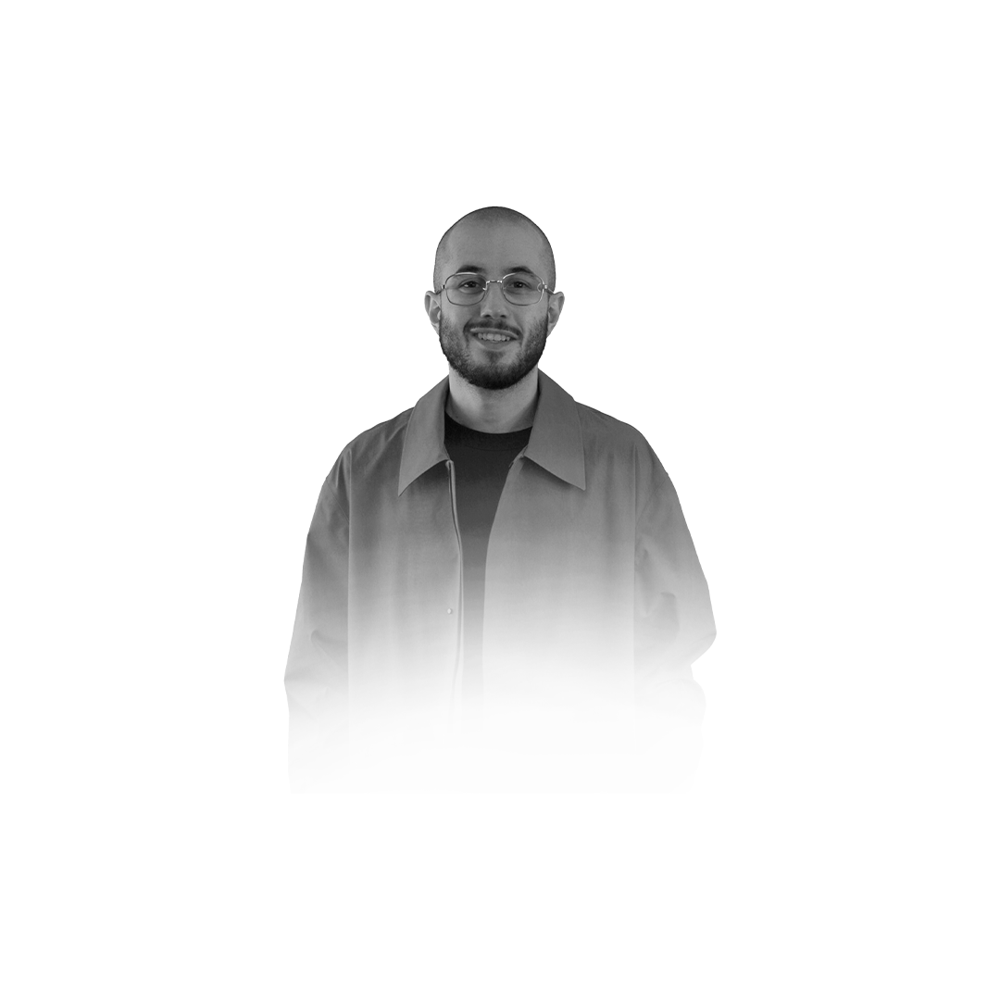

Infographiste — Charleroi
Graphiste passionné, je crée des visuels clairs et percutants — identité, motion, design sportif et UI/UX dans un seul profil.
Me contacter →Infographiste
Graphiste passionné basé à Charleroi. Identité visuelle, motion design, design sportif et UI/UX.
Me contacter →
Infographiste · Charleroi
Identité visuelle, motion design, design sportif et UI/UX — un profil complet, présenté comme une couverture de magazine.
Me contacter →Infographiste
Graphiste passionné, je crée des visuels clairs et percutants avec le souci du détail.
Infographiste
Identité visuelle, motion design, design sportif et UI/UX — Charleroi.
Me contacter →